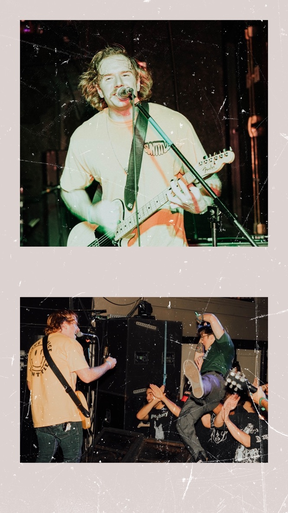

Hey Ya'll, Im Sean. Growing up I always had a creative ming. Loved playing music. singing and playing guitar was my passion. touring the u.s.a since I was around 19 meeting some of the greates humans and seeing the most beautiful places helped me grow as a person.
Now 32 years of age and wanting to find my carrer I've pivoted from creater in music to creater in programing. Starting with python and now slowly learning full stack development. So stoked on this journey.
Aside from teaching my self how to program (while I finish my degree) I am also teaching myself how to day trade. These two passions give me reason to continue to learn everyday. That and getting swol af in the gym. Hope you enjoy my page!
